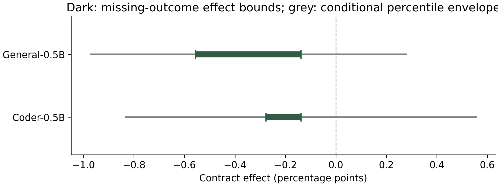
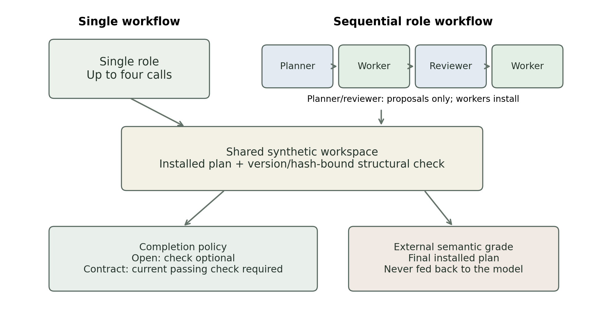

RESEARCH / STUDY 01
What makes an agent
actually finish?
A companion study on structural verification, role-staged workflows, and the gap between accepted completion and a correct result.
AI-assistedWorking paper
Agent Deck offers design blueprints. This study evaluates four specific workflows in a bounded synthetic environment; it does not validate the catalogue's 64 families or 384 presets.
- assigned attempts
- 2,880
- completed trials
- 2,876
- interrupted outcomes
- 4
- completed-trial calls
- 8,549
- measured input + output tokens
- 6,155,745
- evaluation draws
- 120
- distinct evaluation payloads
- 115
- passing final apparatus tests
- 49
01 / OBSERVED RESULTS
A structural pass is not a correct answer.
Requiring a passing structural check did not produce an observed correctness benefit in this study. The conditional uncertainty envelopes include zero. Sequential role workflows used more tokens, and most successful plans came from a task with an input-order shortcut.
| Model / workflow | Correct / completed / assigned | Success | Mean tokens | Mean calls |
|---|---|---|---|---|
| Coder-0.5BSingle / optional check | 62 / 360 / 360 | 17.2% | 495 | 1.02 |
| Coder-0.5BSingle / required check | 59 / 360 / 360 | 16.4% | 1,787 | 2.13 |
| Coder-0.5BStaged roles / optional check | 62 / 360 / 360 | 17.2% | 2,996 | 4.00 |
| Coder-0.5BStaged roles / required check | 63 / 359 / 360 | 17.5% | 3,015 | 4.00 |
| General-0.5BSingle / optional check | 4 / 360 / 360 | 1.1% | 718 | 1.32 |
| General-0.5BSingle / required check | 1 / 359 / 360 | 0.3% | 2,865 | 3.31 |
| General-0.5BStaged roles / optional check | 0 / 359 / 360 | 0.0% | 2,585 | 4.00 |
| General-0.5BStaged roles / required check | 0 / 359 / 360 | 0.0% | 2,669 | 4.00 |
More stages, more measured tokens
Staged workflows averaged 2.63× the single-workflow token cost for Coder-0.5B and 1.47× for General-0.5B. These descriptive comparisons do not isolate agent count or equalize actual compute.
Success was concentrated in one template
232 of 246 correct Coder plans and 5 of 5 correct General plans were recovery tasks. A deterministic input-order shortcut solved 20 of 20 recovery evaluation draws.
| Model | Missing-outcome effect bounds | Conditional 95% percentile envelope |
|---|---|---|
| Coder-0.5B | [-0.28, -0.14] pp | [-0.83, +0.56] pp |
| General-0.5B | [-0.56, -0.14] pp | [-0.97, +0.28] pp |
Bounds use extreme possible correctness outcomes for the four interrupted assignments. The paired bootstrap varies parameterized draws within 24 fixed template/setting cells, retaining all conditions and repeats together: 10,000 resamples, seed 17292026. This is not uncertainty over new model families or task templates, and no p-value is claimed.

Acceptance and semantic correctness are reported separately. Fewer accepted wrong answers can reflect rejected completion claims rather than better answers; conditional error is undefined when nothing is accepted. Full coverage and trajectory diagnostics are included in the paper and data.
02 / EXPERIMENT DESIGN
Four workflows. One recorded environment.
The design combines 6 templates × 4 structural settings × 5 evaluation draws × 4 conditions × 3 repeats × 2 models = 2,880 assignments. The 120 evaluation draws contain 115 distinct semantic payloads. Structural settings are not a validated universal difficulty scale.
Tasks and evaluation
Ranking, capacity, dependency, recovery, validation and freshness. Every task provides explicit rules and a finite list of allowed IDs. A deterministic private semantic grader evaluates the final installed plan; a weaker visible structural check controls eligible completion.
The 48 development and 48 qualification trials are excluded. Earlier v1 experiments are also excluded from the main-series count.
Models and budgets
Local Ollama 0.40.2 with qwen2.5-coder:0.5b and qwen2.5:0.5b, both Q4_K_M. Each trial permits up to 4 calls, an 8,192-token context, 192 output tokens per call, a 16,192-token effective aggregate cap, and 16 finite plan operations.
Temperature 0.2, top-p 0.9, repeat penalty 1.0. Exact seeds, prompts, requests, responses and transitions are preserved. No paid model API was used; electricity was not metered.

03 / LIMITATIONS AND AUDIT
The evidence includes the failures.
- Limited model capability. Two related 0.5B checkpoints, a constrained output budget and low success on most templates limit workflow comparisons. These results do not establish a general architecture ranking.
- Overlap and shortcuts. Six evaluation recovery draws, representing five distinct payloads, exactly overlap preflight data. The split is not a strict semantic holdout. Deduplication and overlap-exclusion sensitivities are explicitly post hoc; original observations remain intact.
- Grader defects. The frozen recovery grader omitted the public length limit; a visible message said eight steps instead of the numeric limit of twelve. A separate reference checked 9,998 controls and 478 completed recovery records. Seven actual final plans exceeded the limit but were already incorrect, so no measured binary outcome changed. Recovery partial scores still omit length.
- Infrastructure incidents. Three resource stops and three heartbeat stops were retained. Two heartbeat stops happened before task admission; the remaining four in-task stops have unknown full outcomes. Interrupted assignments were not retried. All 186 owned process jobs have cleanup attestation.
- Disclosed host repair. A diagnostic captured a heartbeat read PermissionError. The first two heartbeat causes remain unproven. A native-reader candidate failed its control and was rejected. A separately pinned mutex adapter passed qualification with a bounded 100 ms wait; scientific inputs and grading stayed frozen.
What was checked
All 2,876 completed traces were replayed and regraded, 8,549 returned turns checked, and 9 durable turns from 4 partial traces audited separately. The final admitted test suite passed 49 tests. Hashes of 57 frozen inputs were verified, and analysis from a separate archive extraction exactly reproduced the statistics. The rejected candidate's failed test is retained, not presented as passing.
These are AI-assisted internal checks on one workstation, not independent replication, external preregistration, peer review or formal security certification.
Bounded model permissions, trusted native runtime
Evaluated models emit finite JSON data; their generated code never executes. No host-file, shell, URL, process or arbitrary-code tool is exposed. Trusted pre-authored Python does execute. Owned Windows Jobs impose a 3 GiB commit cap, an 8-process limit, a 40% CPU cap and a 590-second lifetime ceiling; private heartbeat and persistent stop controls fail closed.
Those controls are not a sandbox against a compromised Ollama binary or driver. Native components retain current-user permissions; OS-wide egress isolation and a separate GPU quota were not established. The study does not justify unrestricted agent execution.
04 / PLANNED WORK
Next studies, with sharper comparisons.
The first series is complete. The following work is planned and has not been run:
- Repair the task bank before a new freeze. Remove order and first-ID shortcuts, enforce every public grading rule, reject semantic split overlap, and add independent task review.
- Qualify stronger models and match compute. Use models that solve the baseline tasks reliably enough to distinguish workflows; compare under matched realized token or call budgets and repeat with a broader model set.
- Test generalization. Introduce held-out task templates and controlled perturbations. Keep parameter variation separate from evidence about genuinely new tasks.
- Connect implementations to the deck. Implement selected blueprint mechanisms and bind each result to a preset version, runtime revision, task set, model and budget. A tested implementation should never imply that an entire family is validated.
- Make traces easier to inspect. Add a small workflow replay viewer showing proposals, installed artifacts, checks and final grades. Seek independent scientific review before stronger claims or submission.
05 / OPEN MATERIALS
Read, inspect, reproduce.
The archive includes frozen tasks and protocol, controller and analysis code, tests, raw traces, incidents and figure sources. Model weights, native Ollama binaries and private runtime keys are excluded. Analysis replay needs compatible Python, NumPy and the bundled tokenizer; the archived environment uses Windows and Python 3.10. A new inference replication needs a separate output root and verified model weights.
Evidence ZIP SHA-2569653bb4723f27659a0b5e4c59d83bb5293db345a4e9ba6d583775d7690545760
The paper and archive are sealed snapshots of the completed local study. Statements inside them about local-only availability or an unchanged website describe that earlier snapshot; this companion page publishes the materials without rewriting its records. No independent review or venue acceptance is claimed.